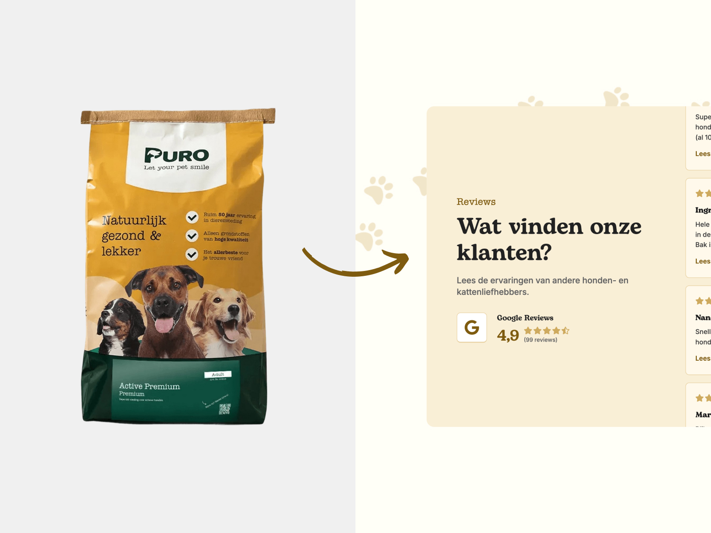
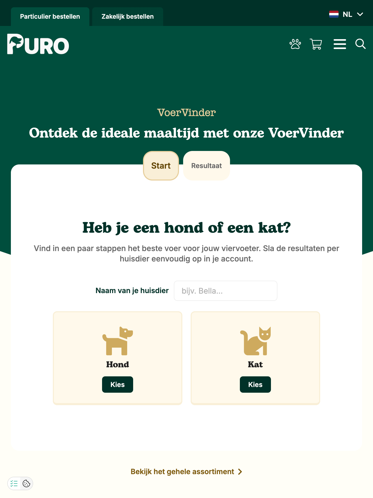
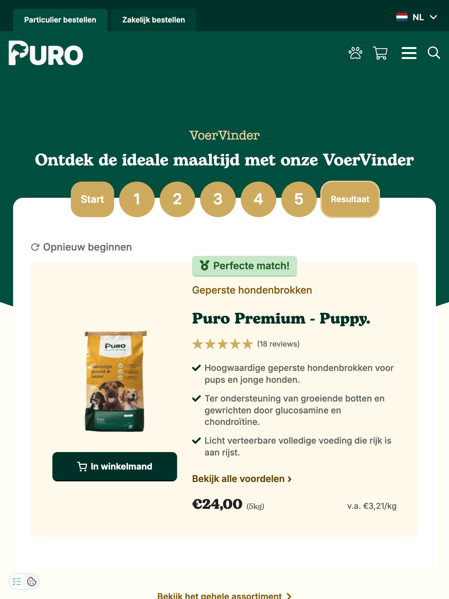

Next project
IPB Printing

Webdesign / UI/UX
Redesigning an e-commerce webshop to simplify product discovery, improve accessibility, and modernize the brand experience.

Every pet owner wants the best for their pet, but navigating complex pet food options can feel overwhelming. The goal for Puro Petfood was to create a webshop interface that balances clarity and credibility with a friendly, approachable aesthetic that fits the audience.
As part of the design team at Yooker Digital Agency, I was responsible for designing key core UI components, including the homepage layout, primary navigation bar, product overview grid, detail pages.

To stay aligned with existing physical packaging, the original brand typography (such as the typewriter font) was repurposed specifically for accent tags and UI labels, making room for a bold, warm humanist serif font for the headings.
Additionally, the color palette was refined and adjusted to meet strict WCAG guidelines. By updating text-background pairings, every interactive button and piece of typography now meets a minimum contrast ratio of 4.5:1, ensuring optimal readability across all pages.


The cornerstone of the platform is the interactive FoodFinder. While collaborating with the team on the multi-step quiz setup, my primary focus was designing a UI that leads users through questions about their pet’s age, breed, and dietary needs without feeling tedious.
To prevent decision fatigue at the end of the flow, I designed the results interface to highlight one single "Best Match" product as the clear primary choice. Alternative options are presented underneath with lower visual hierarchy. This ensures pet owners leave the tool with a confident decision rather than another overwhelming list of choices.
On the product overview and detail pages, I focused on visual hierarchy and layout consistency. Important product attributes, ingredients, and purchase options were structured into modular blocks that users can scan at a glance.
By pairing consistent component spacing with clear UI patterns and accessible contrast, the redesigned webshop provides a smooth, reliable shopping experience that respects the original brand while modernizing its digital presence.
Next project